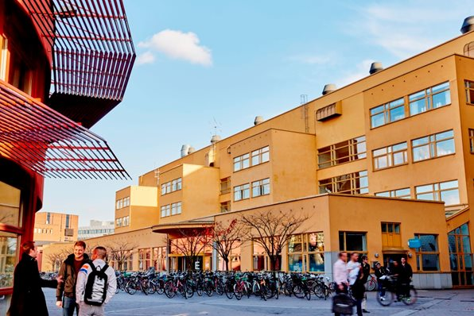
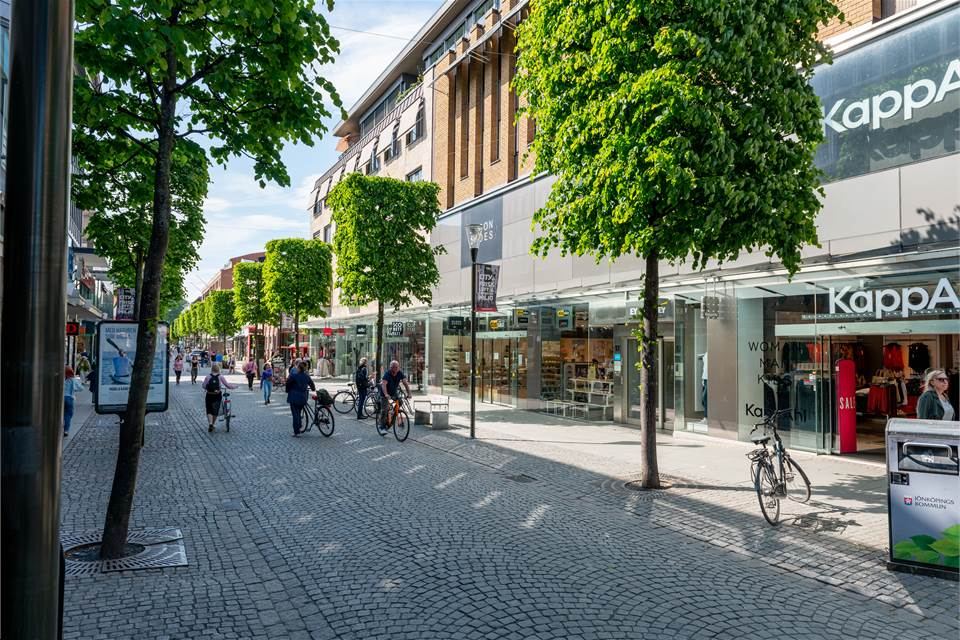
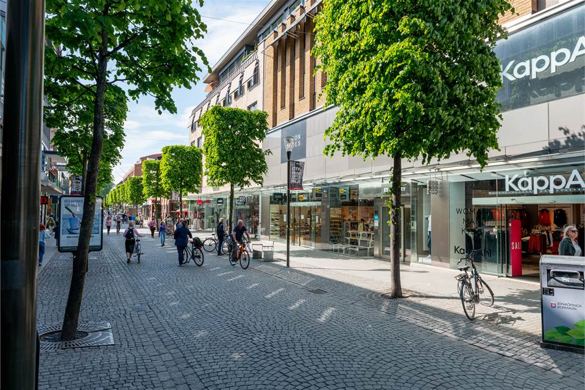
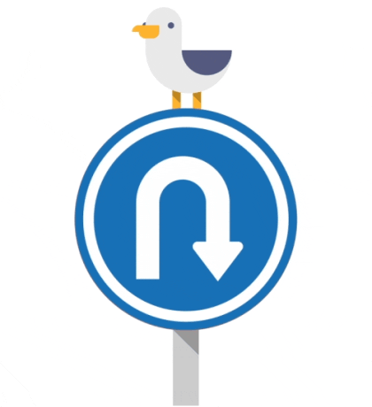

Information about Jönköping
There are a lot of things you can do in Jönköping.There are a lot of jobs,
study and family opportunities here, and a beautiful city-centre as well.
Study opportunities
There are many different paths you can choose to study at Jönköping
University, such as Engineer, Business, Health and more!

Tourism
There are a lot of restaurants, especially at the pier between west and
east side of Jönköping. There are good places in the main street, Östra
Storgatan, with pubs, clubs and restaurants.
There is also an area called "Tändsticksområdet" (Matchdestrict), which
usually have a museum about Jönköping's History, and a cozy place to walk
around as well!
 


Press the Seagull if you want to return to the main page!
